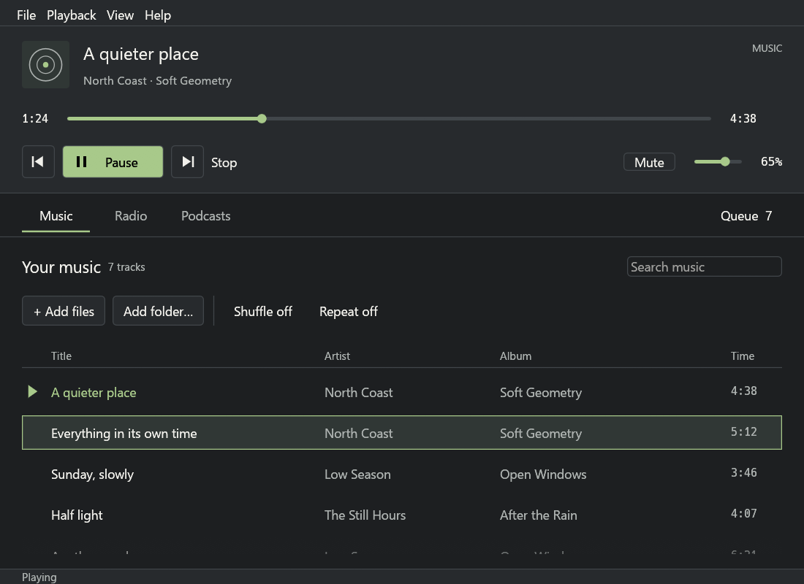
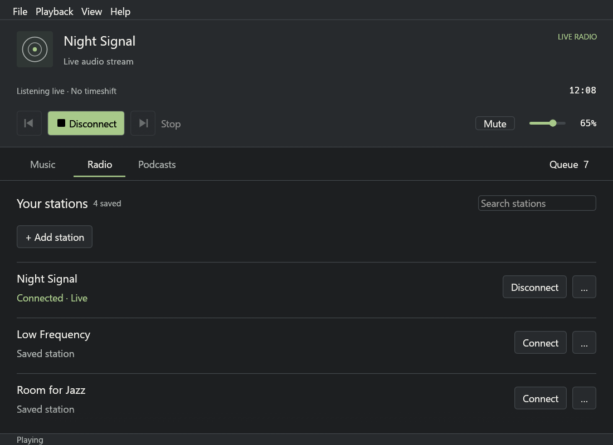
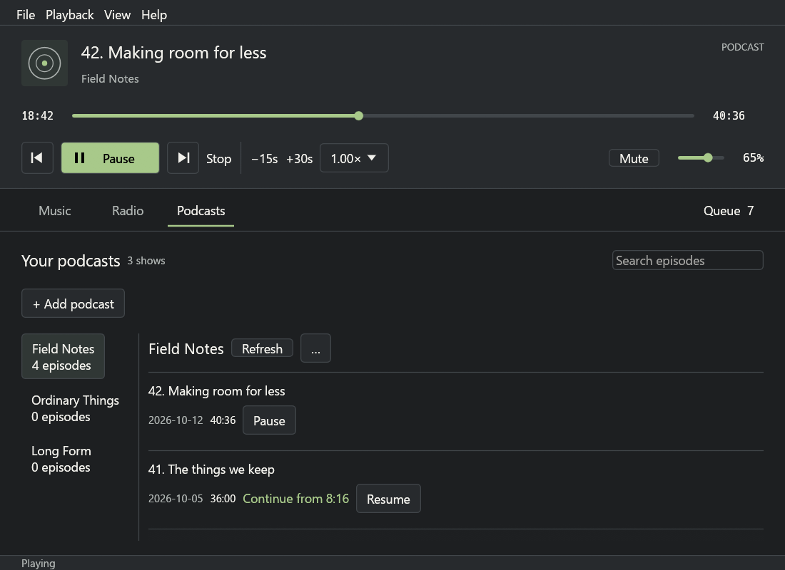
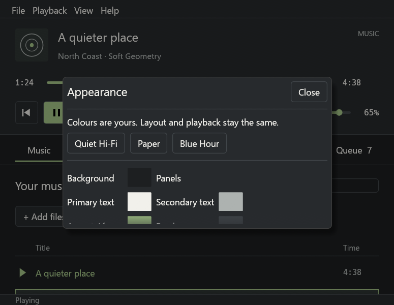

Your local music
MP3, FLAC, OGG/Vorbis, WAV and AAC/MP4. Add files or folders; keep them on your computer.
A quieter kind of player.
A native Windows audio instrument for your music, live radio and podcasts. Familiar controls, considered proportions and colours you can change. Built in Rust. No browser or WebView.
Windows 10/11 x64 · v0.2.0 · Unsigned build; Windows may show a publisher warning.

A persistent transport, distinct Music / Radio / Podcasts sections, and an appearance you can make your own. These are captures from the native Windows application.



Open formats and open streams. No account, no ads, no ripping.
MP3, FLAC, OGG/Vorbis, WAV and AAC/MP4. Add files or folders; keep them on your computer.
Keep your own named stations. Connect directly to an HTTP/HTTPS audio stream; see live connection status.
Follow RSS or Atom shows, resume episodes and seek after audio is prepared locally.
Later, as embedded sources. Their players, their audio, so no EQ or visualizer for those.
Where it's headed, in order.
.wsz skins, and make your own.For Intel/AMD Windows 10 (1809+) and Windows 11. Choose the installer or use the portable ZIP.
Native Windows interface · no administrator install required · no WebView2.
Unsigned builds: Windows may display an unknown-publisher warning. The setup installs per user; uninstall from Windows Settings. Music files are never removed.
For development, install stable Rust, Visual Studio C++ Build Tools and a Windows SDK. No browser frontend or WebView2 required.
git clone https://github.com/rahuling/tapewave
cd tapewave
cargo run --target x86_64-pc-windows-msvc
# Package with Inno Setup 6 installed:
./scripts/build-windows.ps1 -Installer